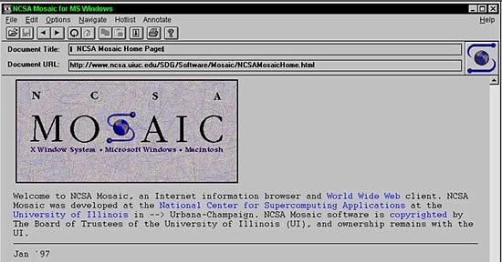
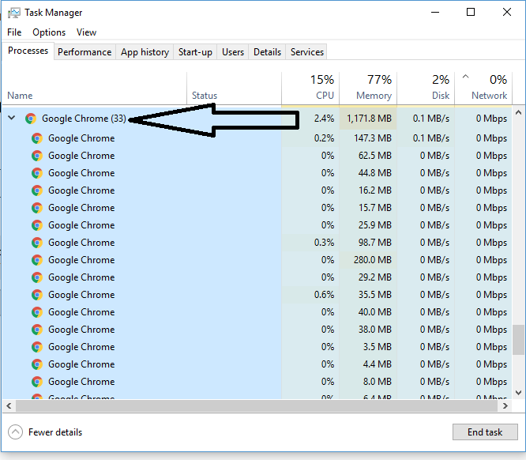

19 December, 2020
History of browsers

We have come a far way in terms of internet browsing, from the first ever browser- or browser-editor rather being WorldWideWeb which was later renamed to Nexus being the only way to view the internet, where in to view images, they had to be downloaded. They the next big browser was the MOSAIC browser by NCSA which let multimedia also be viewed on it and was the foundation for many more browsers to come. After this was the Netscape which was a benchmark in the market at the time. Microsoft licensed Spyglass Enhanced Mosaic in 1995 for 8 million dollars to create the browser Internet Explorer. This was to be included in all versions of Windows and Macintosh later. Netscape open sourced their code to make "The Mozilla Project”. In 2005 with the release of Firefox, we got a lot of new features like Tab browsing, custom extensions and download manager. Then came the revolutionary browser “Google Chrome”, which was released in 2008 with the promise of faster and secure browsing which used multithreading. In late 2019, a whopping 64% users across platform use Google Chrome.
This is mainly because of it’s easy to learn interface and it is faster than many other browsers out there. But there is always a catch.......
The Problem

Google chrome likes RAM. A lot of RAM. If your machine is running on 8Gb RAM or lower and you know the basic of how to get about in the machine, you would have already noticed that with too many tabs, Chrome slows down the machine and only with a couple of tabs, the RAM usage starts hitting 2Gb. As to how much it uses depends on how many tabs you have opened at once and what is running on the tabs but it isnt very hard to start straining your system by only looking at memes on Reddit with a 4k video running in the background and a couple of tabs from your overdue assignment that still isn't done. This is a major issue for low end users who are running on 4Gb as this doesn’t allow a lot of space for other programs to be stored in RAM and it significantly slows everything down.
This isn't only because of the fact that in 2020, a lot of internet stuff just has a higher RAM usage like high-definition videos, features and extensions but also because of Chrome’s “speed”.
Google Chrome sandboxes everything that is running. This includes tabs, extensions, etc. What this means is that Chrome splits off each tab and extension into its own process which occupies its own space and memory. This is done so that if one tab or process were to stop working or crash, it wouldn’t affect the rest of the browsing session. This is a handy feature as this makes sure you don’t lose all your tabs. But this also means that chrome replicates it functionality in every sandbox meaning, it will consume more RAM in comparison. It’s a tradeoff between stability and RAM consumption.
However, there is another reason for such high RAM usage. Part of the reason why it's so fast, is because it a bunch of its data in RAM, which is a lot faster to access than HDD or SSD. It uses Prerendering to do so. This is when Chrome guesses as what will next be browsed and loads it in advance. This allows lesser wait for the website to load like in conventional browsers. This does add to Chrome’s speed significantly.
Solution.... Kinda
Chrome does try to compensate for this high usage with some memory management tricks. Some of them are Tab Discarding. This is when Chrome automatically unloads a few tabs from memory which aren't being used or haven't been clicked on in a while. However, when the user does open it, it is significantly delayed as Chrome reloads the content again.
The easiest solution to this is to get more RAM or manage tabs better. However other than that, changing browsers wont exactly help as many other browsers use the exact sandbox technique to keep the experience smooth. But Chrome does have a task manager where the user can accordingly end extensions and tabs that are using too much RAM.